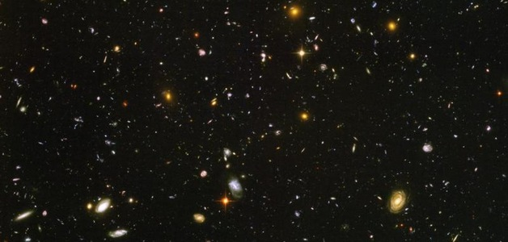
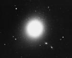
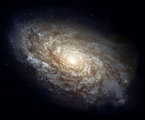
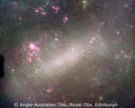
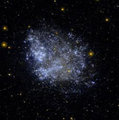

Credit: NASA, ESA, S. Beckwith (STScI) and the HUDF Team
A galaxy is a gravitationally bound entity, typically consisting of dark matter, gas, dust and stars. Galaxies populate the Universe, mainly residing in clusters and groups. There are thought to be over 100 billion galaxies in the observable Universe. The most well-known galaxy is our own Milky Way – and indeed, the term galaxy comes from the Greek “gala” meaning “milk”.
Until the early 20th century, it was widely believed that the Milky Way was the only such structure in the Universe. Around the middle of the 18th Century, German philosopher Immanual Kant proposed “island Universes” that were similar to the Milky Way and that populated the Universe. Sir William and Caroline Herschel were the first to systematically catalogue the night sky – they catalogued around 2500 objects, including “spiral nebulae” that appeared to have a similar structure to the Milky Way. Later, using the largest telescope of its day, optical astronomer Lord Rosse agreed with Kant’s view, based on observations he made of M51 with his home-made 72 inch telescope.
In April 1920, two eminent scientists – Harlow Shapley and Heber D. Curtis held a public debate about the size of the Milky way and the nature of “nebulae”. Shapley believed that the Milky Way was vastly greater in size than previous estimates, and that spiral nebulae were a part of it. On the other hand, Curtis believed that spiral nebulae were in fact island Universes, that lay beyond the Milky Way. There was no winner as such to this “debate” which was finally settled in 1923, when, using the period-luminosity relationship of cepheid variable stars, young Edwin Hubble was able to determine the distance to the Andromeda “nebula” was around 750 kpc, and that it had a diameter larger than that of the Milky Way. This proved that Andromeda was not some small “spiral nebula” within the confines of the Milky Way, but an enormous stellar system in its own right.
Size and Mass of galaxies
Most galaxies have a total mass between ~ 107 M⊙ and 1012 M⊙. They range in size from a few kiloparsecs, to over one hundred kiloparsecs in diameter. Our own Milky Way contains over 100 billion stars, including our Sun, and the stellar disk extends to about 50 kpc in diameter. The spherical stellar halo extends up to 100 kpc, and the dark matter halo may extend even beyond this.
Classification of galaxies
Galaxies are classified according to how they appear, or their optical morphology. The first attempt at a classification scheme for “Nebulae” was by Sir William Herschel, and his son, Sir John Herschel. However, the most common classification scheme in use today is the Hubble classification scheme. Galaxies can be classified into the following broad categories, although there are many sub-catagories within each classification:
- Elliptical,
- Spiral,
- Irregular, and
- Dwarf galaxies.
|
 |
 |
 |
 |
Galaxy formation and evolution
The galaxies in the Universe are constantly changing – through secular evolution, mergers and interactions. Galaxies in the early Universe that have not formed stars yet are known as “proto-galaxies”, and these galaxies typically contain just dark matter and gas. It has been postulated that some such proto-galaxies may still exist, and in fact that there might be a class of “dark galaxies” that do not have the right conditions to ever form stars – these galaxies are solely made of dark matter, and perhaps gas. The theory of galaxy formation is actively being investigated by astronomers and astrophysicists.